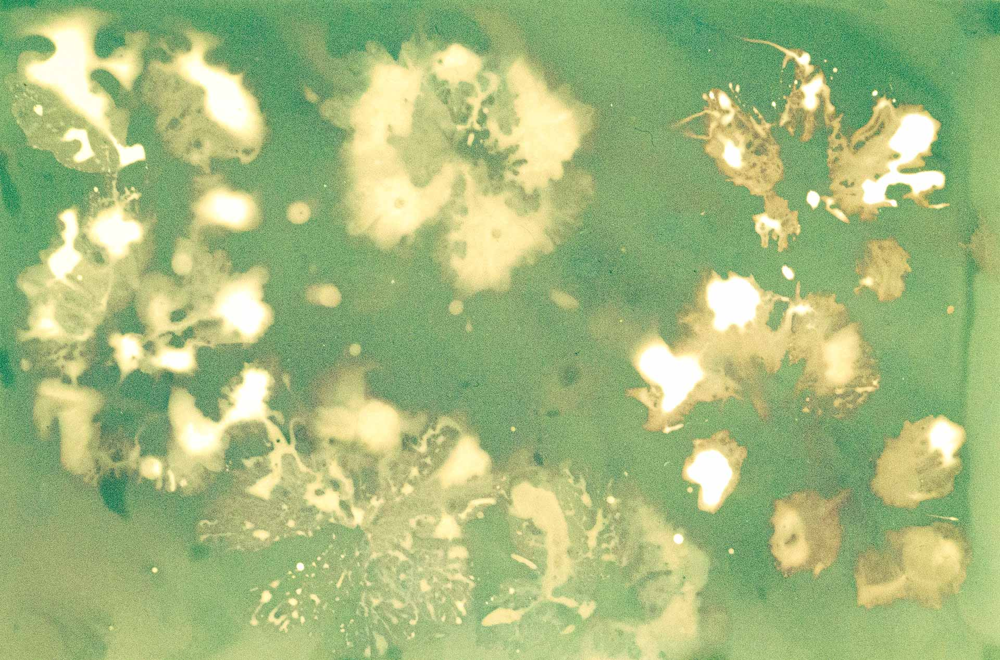
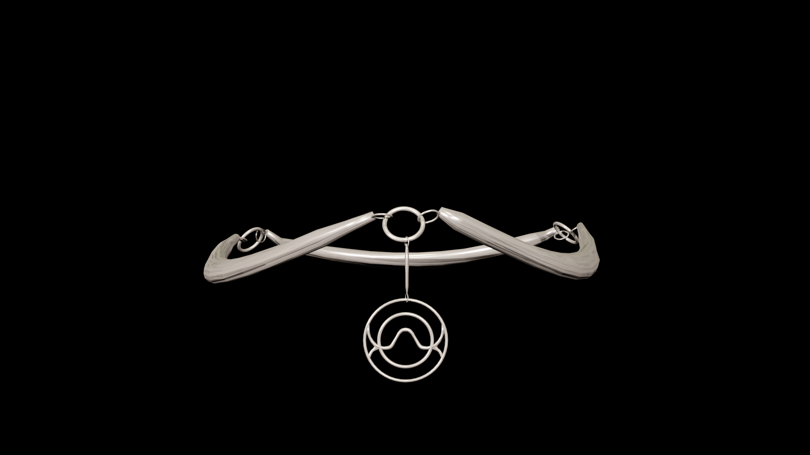
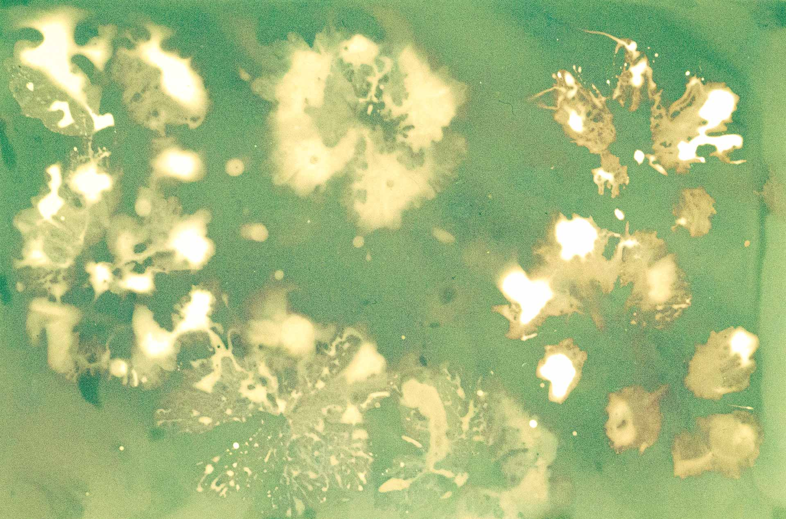
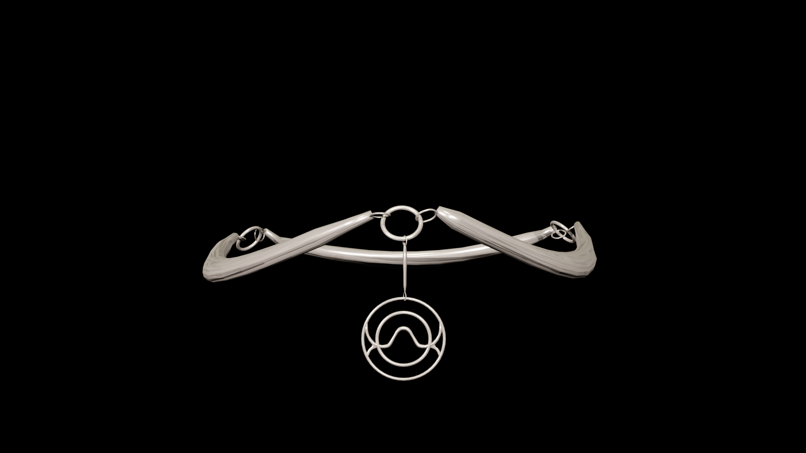

Questo fenomeno porta l'umanità a creare un culto fondato sull'anima primordiale della dea alga, che prende il nome di Duara. Con il passare del tempo, la comunità di Duara cresce per adesione spontanea e appassionata, portando il culto a trasformarsi in una religione strutturata e diffusa su scala globale. Duara dona la vita e indica il ritmo armonioso. Il fulcro della connessione con la divinità si raggiunge tramite il sacro totem, che permette ai fedeli di respirare all'unisono con il ritmo dell'alga madre.
This phenomenon led mankind to create a cult based on the primordial soul of the algae goddess, which is called Duara. Over time, the community of Duara grows through spontaneous and passionate membership, leading the cult to become a structured religion, spread on a global scale. Duara originates life and indicates its harmonious rhythm. The core of the connection to the goddess is achieved through the sacred totem, which allows the worshippers to breathe synchronously with the rhythm of Mother Alga.